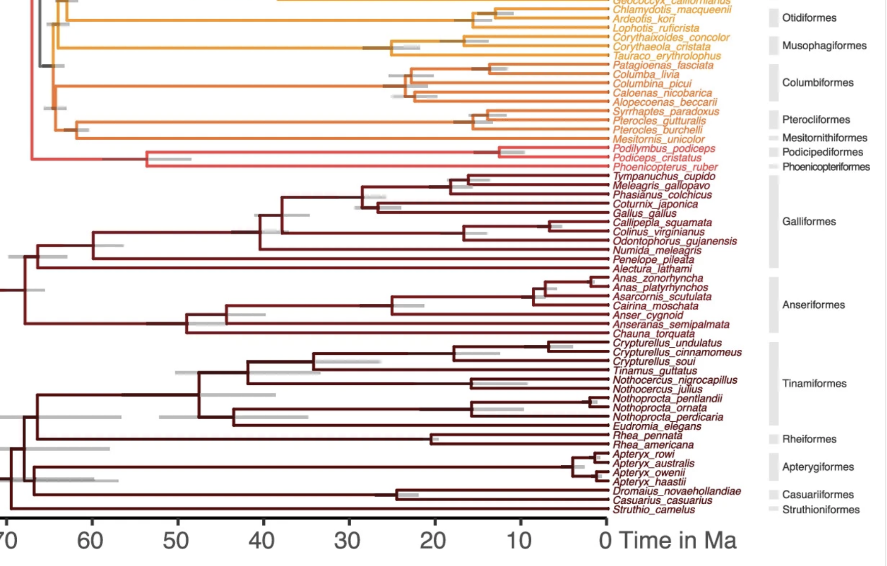
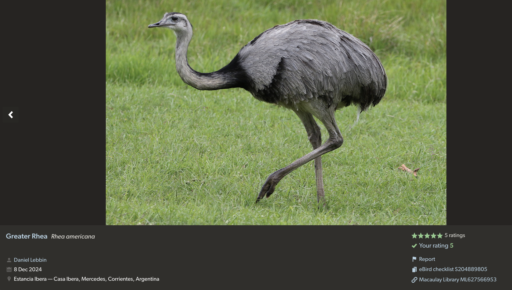
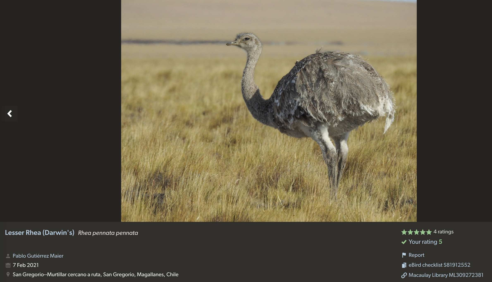
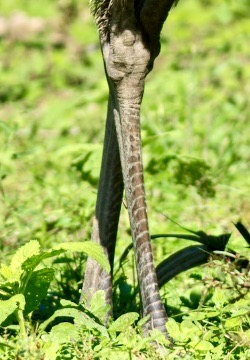
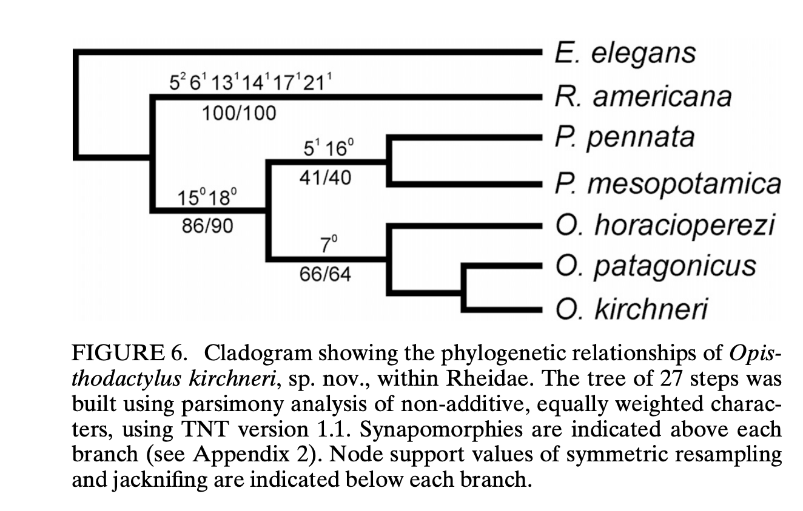
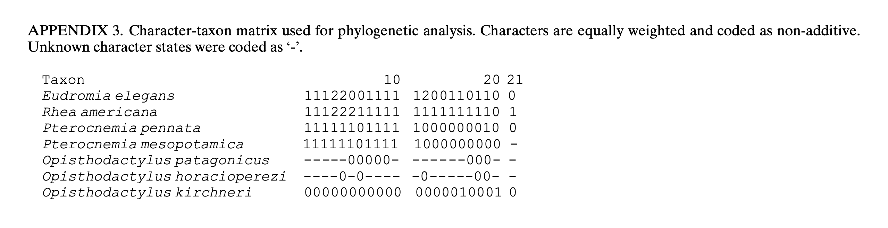

Proposal (1046) to South American Classification Committee
Restore the
monotypic genus Pterocnemia for Rhea pennata
Effect
on South American CL: This proposal would restore one genus to the
checklist.
Background: SACC Proposal 348 (2008), submitted by
Manuel Nores, suggested that Pterocnemia should be merged into Rhea,
based primarily on the argument that the two rheas appear morphologically
similar. Comments from José Fernando
Pacheco included a reference to a 2007 publication by Delsuc et al. that
documented a brood of hybrid chicks produced in captivity. The proposal passed on a 6 to 2 vote,
although several members noted hesitancy.
Some of the members voting in favor of the proposal suggested that
retaining two genera was not ‘informative’, but there were also questions
raised about whether there were other pertinent studies available that would
help answer the question.
New
Information: Some available information is not so
new. For example, Haddrath and Baker
(2001) analyzed mitochondrial DNA of a variety of living and extinct ratites,
and they estimated that the two rheas diverged about 13.7 million years ago
(see their Table 2). However, molecular
systematics has advanced rapidly since then, and perhaps the most detailed
analysis currently available, for Aves in general, is Stiller et al.
(2024). This study did include both
rheas, and their phylogeny (Extended Data Fig. 2) indicates that the two taxa
diverged about 20 MYA, or perhaps slightly earlier. This rather ancient divergence is roughly
similar in date, based on the Stiller et al. phylogeny, to that of Ibidorhyncha
and Himantopus, or between Nectariniidae and Thraupidae, to give just
two examples.
Recommendation: Molecular data indicates that the two rheas
are not closely related, and their divergence is much older than the vast
majority of congeneric bird species, so I would recommend voting ‘Yes’. This is one of many examples of molecular
data indicating that ideas of relationships based of phenotypic similarities or
differences may not reflect the actual evolutionary history of the taxa. It has perhaps been more frequent to merge
taxa that are morphologically divergent when evidence of close relationship has
become available (e.g. Hawaiian honeycreepers, the Vangidae, etc.), but
splitting taxa that retain ancestral similarities (despite extensive genetic
differences) may be less common.
Nonetheless, both are part of the emerging pattern of morphology and
genetics telling different evolutionary stories, a pattern that probably
requires more attention and study. I
suggest that lumping two species that are so genetically distinct into the same
genus is misleading and obscures what may be interesting questions for further
research. This proposal would not
require description and naming of new taxa, since Pterocnemia appears to
be a valid name and has been used in the checklist relatively recently, so this
seems like an ‘easy fix’.
References:
Haddrath, O., &
A.J. Baker. 2001. Complete mitochondrial
DNA genome sequences of extinct birds: ratite phylogenetics and the vicariance
biogeography hypothesis. Proc. R. Soc.
Lond. B 268:939-945.
Stiller, J., and 51
other authors. 2024. Complexity of avian evolution revealed by
family-level genomes. Nature
629:851-860, and supplementary information available online
(https://doi.org/10.1038/s41586-024-07323-1).
D. James Mountjoy,
April 2025
Addendum from Remsen: Here is a screen shot
of the relevant portion of Extended Data Figure 2, which I encourage
voters to peruse to look at comparative branch lengths throughout the
nonpasserine tree:

Here are also some photos from Macaulay for
comparisons – see photos for credits:


Voting Chart: https://www.museum.lsu.edu/~Remsen/SACCPropChart1044+.htm
Comments
from Stiles:
“YES. Looking at the phylogeny, Pterocnemia definitely should be split
from Rhea (as the proposal stated, an ‘easy fix’.)”
Comments
from Claramunt:
“NO. I am reluctant to split two sister species into two different genera in
general, and in this case, I don’t see compelling evidence of high levels of
divergence. First, note that the Rhea node in Stiller et al, was
calibrated: a minimum age 20.1 Ma was enforced on that
node based on the phylogenetic position of an old fossil rheid that is in the R.
pennata lineage (see Stiller et al. supplemental materials). So, the age
has more to do with this calibration restriction than the genomic divergence
between the two rheas, which is not unusually high by any means. See for
example Fig. 1b in Haddrath and Baker: genomic (mtDNA) divergence between the
two rheas is greater than the divergence between two moas but less than the
divergence between emu and cassowaries (see also their Fig 2).
“I
don’t find the age argument valid either. It’s easy to find younger genera
among birds, but when focusing on palaeognaths, several other genera have
comparable ages: look for example at the age of Crypturellus, Nothoprocta,
and Nothocercus in the Stiller et al. tree, all in the early Miocene
too.”
“The
two rheas are very similar in all respects. I have seen misidentified specimens
in museums! I fail to see any compelling evidence in the proposal for why we
need to split these two species into different genera.”
Comments
from Remsen:
“YES. Without a fixed definition of what constitutes a genus, all arguments in
a case such as this are subjective. It’s
that subjectivity, however, which makes me favor using the independent
variable, time, as a metric, at least in a crude way, to give genus and other
higher categories some objective meaning.
Most of you have heard my reasoning on this too many times already but …
using time bands as the primary way of delimiting higher taxa at least provides
some information content to these categories (vs. eclectic views of degree of
morphological differentiation). Oscar
Johnson, Eamon Corbett, and I have a manuscript showing that with few
exceptions, the three most frequently used higher-level categories (order,
family, genus) do correspond roughly to broad categories of lineage ages as
estimated by time-calibrated trees -- but that’s not published, which is my
fault. For now, you’ll just have to take
my word for it or begin to pay attention to this when you see trees: taxa
traditionally treated as genera are almost all 5-15 million years old (families
15-40 myo; orders 40-65+). Thus,
traditional taxonomic ranks defined on perceived degree of differentiation are
mostly consistent with lineage age far greater than expected by chance. Thus, the cost of using lineage age would
cause few perturbations in traditional ranking schemes. The benefit is that it would facilitate
comparisons of relative rates of morphological evolution, which to me is of greater
biological importance than trying to do the opposite, namely use morphology to
somehow define taxonomic categories. Use
of time bands to demarcate higher taxa is classic “typology on a continuum”,
but at least the continuum has a quantifiable scale and is independent of the
taxonomy. End of sermon.
“As
many have concluded, including Santiago above, the degree of morphological
difference between the two rheas is probably closer to taxa treated as
congeners than those in separate genera, although this was not considered a
pressing problem by the many ornithologists who treated them in separate genera
from 1871 until relatively recently.
Body size and minor plumage differences on their own would not be likely
characters to use in delimitation of genera.
Degree of tarsal feathering is likewise not a character associated with
generic differences; for example, Buteo regalis and B. lagopus
are not placed in their own genus, and in Lagopus species, this
character changes seasonally. That
leaves tarsal scutellation pattern, a character considered to be of much
greater importance to previous generations of avian systematists, before the
advent of genetic techniques. I assume
the rationale for its importance is that the patterns themselves have no known
adaptive function (as far as I know) and thus might roughly reflect differences
in ages of taxa. Here are close-ups of
the tarsal scutellation differences in the two species (Greater on left):

“Lesser
Rhea has the upper part of the tarsus feathered, which might be an adaptation
for the much colder climate in which it lives.
But look at the fairly substantial differences in the pattern of the
scutes (which most references have described in misleading ways): transverse in
americana and reticulate in pennata except for the distal few. The number of transverse scutes is given as 8
to 18 by Blake (1977; Manual … ) and Davies (2002; Ratites and Tinamous; Oxford);
the individual Lesser in the photo has few transverse scutes, but examining
photos of additional individuals shows that others can have twice that
many. I am not going to argue that this
means that they should be placed in separate genera. The first step in that potential line of reasoning
would be to do comparisons within other genera of birds, especially Paleognathae. My intent here is only to try to figure out
why previous generations were comfortable placing them in separate genera.
“Santiago
pointed out that the 20.1 mya node was enforced on the tree by a fossil, not by
degree of genomic difference per se. My
response is that if the two lineages can be distinguished morphologically going
back to the early Miocene, then it is likely that genomic differences must also
be substantial. These two lineages have
been evolving separately for a long time.
“Looking
through the nonpasserine tree in Stiller et al., I spotted 15 sets of congeners
(including Ciccaba-Strix, which we treat as congeneric). Subtracting two sets that include species now
treated by us as separate genera (Charadrius and Nyctibius) and
one case of paraphyly (Pterocles-Syrrhaptes), that leaves 12
sets. Of those, only 5 have estimated
node ages of more than 15 mya: the rheas, three genera of tinamous, and Anhinga. This comparison is strongly biased towards
young node ages because not all species in a genus were sampled except for the
rheas. The Rhea node is the
oldest of the 5; note that 3 of the remaining 4 are Paleognathae. Regardless of taxonomy, this suggests the
biologically interesting point of very conservative morphological evolution in
those 5 sets.
“The
estimated 20 mya split between the rheas is older than that estimated between Chionis
and Pluvianellus, Glaucidium and Strix, Aptenodytes
and Pygoscelis, Arenaria and Calidris, Odontophorus
and Callipepla+Colinus, gulls and terns+skimmers, Circaetus
(Old World snake-eagles) and Spizaetus+Aquila+Haliaetus,
and others. Note that there are
fairly large confidence intervals around all those nodes except the Rhea
node; this makes precise comparisons of these estimates unwise. Nonetheless, treating the rheas as congeners
is out-of-whack with just about everything else.
“Regardless
of whether one thinks lineage age should be taken into consideration in
taxonomy, the reason I vote YES on this one is that we (SACC) subsumed a
long-standing genus (Pterocnemia) based on a superficial assessment of
morphological similarities and a case of hybridization in an aviary, and even
then, as noted in the new proposal, there was considerable ambivalence. In contrast, the case for separate genera is
based on a comprehensive and sophisticated analysis that shows that treatment
as congeners is THE extreme in the taxa sampled. For the tinamous or anhingas, in contrast, no
other generic divisions have been used that I can find in modern times (fide
Peters checklist synonymies).
“One
final point on the often-stated opinion that use of monotypic genera provides
no information. Indeed, monotypic genera
provide no immediate information on sister taxa without reference to the
phylogeny. This cost, however, is offset, in my opinion, by the benefit of calling
attention to the point that data suggest that the lineage has been evolving
separately for a very long time regardless of degree of morphological
differentiation.”
Additional
comments from James Mountjoy: “The comments from Santiago Claramunt were
useful in leading me to papers on fossil rheas that were cited by Stiller et
al. (2024) for their fossil calibration date for rheas (Agnolin and Chafrat
2015) and to a paper that examined the relationships of extinct and living
rheids (Noriega et al. 2017). Noriega
et al. found that the two species of Pterocnemia (extinct P. mesopotamia
as well as P. pennata) were more closely related to the three species in
the extinct genus Opisthodactylus than they were to Rhea, the
basal taxon. Bootstrap support is not
great for some of the nodes in their phylogeny, but it does suggest that
merging Pterocnemia into Rhea, while retaining Opisthodactylus,
would result in Rhea being a paraphyletic genus.

In
addition, the character matrix provided by Noriega et al. shows that Rhea
and Pterocnemia differed in 11 of the 22 characters examined. These characters were all features of the
hindlimb bones, as that was the primary material available for the fossil taxa.
Both of the papers seem to suggest that
the genera are fairly easy to diagnose using these features. Their
results suggest to me that there may be additional morphological features that
differ between the rheas in other areas of the body, were these to be closely
studied.

“I
would also note that while Haddrath and Baker's estimate of the divergence date
between the rheas (13.7 million years ago) is more recent than their estimate
of the split between emus and cassowaries (35 MYA), it is still very old
relative to most genera outside the paleognaths, and at the high end of the
range (5-15 myo) suggested by Remsen for genera. Emus and cassowaries are generally agreed to
belong in separate genera, and in the past I believe that treatment as separate
families was not uncommon (e.g. Peters' Check-list). The rhea node in Haddrath and Baker does not
have the same constraint as in Stiller at al. They used a specimen
of Emuarius, thought to be in the emu lineage, as their one fossil
calibration point.”
“References:
Agnolin, F. L., & P. Chafrat. 2015. New fossil bird remains from the Chichinales
Formation (Early Miocene) of northern Patagonia, Argentina. Ann. Paleontol. 101:87-94.
Noriega, Jorge I., Emilio A. Jordan, Raúl I.
Vezzosi, & Juan I. Areta. 2017. A new species of Opisthodactylus
Ameghino, 1891 (Aves, Rheidae), from the late Miocene of northwestern
Argentina, with implications for the paleobiogeography and phylogeny of rheas. J. Vertebr. Paleontol. 37: e1278005.”
Comments
from Bonaccorso:
“NO. The entire discussion is highly subjective, but I can relate to Santiago’s
perspective. They appear to be sister species and are very similar
morphologically. Yes, they seem to have diverged considerably, but if the
divergences between them loosely fall within the accepted range for genus-level
differences among palaeognaths, I don’t see a compelling reason to disrupt
taxonomic stability.
“I’m
also not convinced by a parsimony-based reconstruction of morphological traits,
as we know that morphological homoplasy can introduce considerable noise into
such analyses.”
Comments
from Naka:
“YES. This is indeed a very interesting case, and I went back and forward with
both Santiago’s and Van’s enlightening comments. I would like to see Van’s et
al. paper on the use of time for classification divisions above the species
taxon level. It certainly has its merits, although I do think that time alone,
without major morphological differentiation is an unwarranted measure. The
tilting point for me was the picture of the pattern of the scutellations in the
two species. I do consider that as a major morphological difference.
Furthermore, the fact that there are extinct rheids helps disentangle the idea
that the current “sister taxa”, are only sisters due to the extinctions of
other forms in the clade. Therefore, I vote YES for restoring the genus Pterocnemia
for pennata.”
Comments from Areta: “First of all, the
specific epithet is pennata, not pinnata. Second, Pterocnemia would not be monotypic (or, more aptly, monospecific)
because a) it is likely that there is more than one extant species (i.e., pennata and tarapacensis/garleppi), and b) there is at least one fossil species
that has been often placed in Pterocnemia,
P. mesopotamica.
“Now, the case is not
so easy. It is surprising that so little has been done to understand the
phylogenetic relationships, level of genetic divergence, and taxonomy of the
rheas given their uniqueness. To begin with, I was happy with Pterocnemia and would not have lumped
the genera without solid reasons. But this was done, and now the question is
whether there is good evidence to return to the previous genus-level
classification or whether this return might just be a momentary lapse of
(un)reason only to return to a broadly defined Rhea in the future.
“The fossil record is
relatively rich for this group, as expected for birds that are large and
flightless. The existence of fossil taxa that can seemingly be diagnosed
morphologically, such as Pterocnemia
mesopotamica and Opisthodactylus
spp. can be used to argument in favour of the recognition of these genera.
However, it might also be the case that more work is needed to understand
variation in extant species of rheas, as highlighted by Picasso (2016), Medina
et al. (2019) and Picasso et al. (2022):
“Main issues on the rheas record
“Minor and
subtle skeletal differences have been observed between the skeletons of Rhea
americana and R. pennata (e.g. Cunningham, 1871; Gadow,
1885; Tonni and Laza, 1980; Ameghino and Rusconi, 1932; Tambussi
and Tonni, 1986). However, several osseous morphological features of the
tibiotarsus and tarsometatarsus have been established to discriminate them
(e.g. Tonni and Laza, 1980; Tambussi and Tonni, 1985; Picasso
et al., 2011; Agnolin and Noriega, 2012), but these features can overlap
between both species (Picasso, 2016; Abbona et al., 2019) and
consequently their application can be ineffective. DNA-based methods have been
useful to identify archaeological rhea remains (Abbona et al., 2019), if
possible, it would be interesting to be able to apply these methods in
palaeontological studies
“I have consulted my
close bird palaeontologists, Jorge I. Noriega and Marcos Cenizo, and both agree
in that further work and clarifications are warranted regarding the diagnoses
of Rhea and Pterocnemia. Now, given the existence of Opisthodactylus (a completey fossil genus), if we decide to lump Rhea and Pterocnemia, and given the current phylogenetic hypotheses on the
sister relationship between Opisthodactylus
and Pterocnemia, lumping Rhea and Pterocnemia would demand that we are also advocating for a lump Opisthodactylus into Rhea. M. Cenizo (in litt.) is moreover
of the opinion that all these will likely need to be lumped under a single
genus in the future.
“So,
what to do? Given the problems with the fossil record and the lack of thorough
recent studies, I think that instead of going back to my beloved Pterocnemia, we should stick to Rhea for the time being. If more solid
evidence arises clarifiying why Pterocnemia
deserves to be recognised (integrating behavioral, anatomical, genomic, and
other data), we can go back to our former treatment. Thus, I vote NO to the recognition of Pterocnemia,
mostly on the ground of stability, and until there are rigorous data to change
our current treatment. Note that I am not defending that placing everything in Rhea is the best possible solution, but
until someone tackles the generic limits of the rheas through an integrative
approach, I think that we should not be changing the generic placement of the
small rheas back and forth.
“Medina, M., Picasso, M.B.J., Campos,
M., and Ávila, N. 2019. Tarsometatarsus, eggshells and the species level
identification of large-sized flightless birds from Boyo Paso 2 (Sierras of
Córdoba, Argentina). International Journal of Osteoarchaeology 29:584–594
Picasso MBJ (2016) Diversity
of extinct Rheidae (Aves, Palaeognathae): historical controversies and the new
taxonomic status of Rhea pampeana
Moreno and Mercerat 1891 from the Pleistocene of Argentina, Historical Biology
28:1101-1107
Picasso MBJ, Acosta
Hospitaleche C, Mosto C (2022) An overview and update of South American and
Antarctic fossil Rheidae and putative Ratitae (Aves, Palaeognathae). Journal of South American Earth Sciences 115:
103731”
Comments
from Robbins:
“YES. Primarily because of the current recognition of Opisthodactylus,
we should probably return to recognizing Pterocnemia. Nacho is correct,
more work needs to be done, but regardless of what comes to light this is a
subjective decision. So, because of Opisthodactylus, I vote yes.”
Comments
from Zimmer:
“YES. I’ve gone back and forth on this,
but, ultimately, like Luciano, I’m persuaded by the combination of very
different tarsal scutellation between the two species, and by the revelation
that pennata is seemingly sister to Opisthodactylus, NOT Rhea
americana.”
Comments
from Lane:
“YES, weakly. I believe that the age of the taxa involved, the non-sister
relationship between R. americana and R/P. pennata with respect
to extinct species, and the tarsus scutellation all point toward favoring the
recognition of Pterocnemia. Of course, the status of two taxa within Pterocnemia
is another case to be reviewed by the committee.”